On a limit cycle curve the following bifurcations can occur
- Branch Point of Cycles, this will be denoted as BPC
- Period Doubling, denoted as PD
- Fold, also known as Limit Point of Cycles, this will be denoted as LPC
- Neimark-Sacker, this will be denoted as NS
The test function for the Period Doubling bifurcation is defined by
the following system
here and 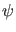 are so-called bordering vector-functions [25],
see [15] for details on the implementation. The system is discretized using
orthogonal collocation and solved using the standard MATLAB sparse system solver.
The solution component
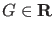 of this system is the test function and equals zero
when there is a Period Doubling bifurcation.
The Fold bifurcation is detected in the same way as the Fold bifurcation of equilibria,
the last component of the tangent vector (the  component) is used as
the test function.
component) is used as
the test function.
The Neimark-Sacker bifurcation is detected by monitoring the eigenvalues of the monodromy matrix for the cycle. The monodromy matrix is computed like in AUTO by a block elimination in the discretized form of the Jacobian of (47).
BPC cycles are not generic in families of limit cycles, but they are common in the case of symmetries, if the
branch parameter is also the continuation parameter. CL_MATCONT uses a strategy that requires only the solution of linear systems;
it is based on the fact that in a symmetry-breaking BPC cycle 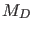 has rank defect two, where is the square matrix ,
obtained from the discretized form of the Jacobian of (47).
To be precise, if
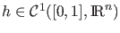, then
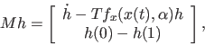
and
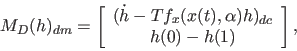
where 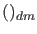 and 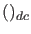 denote discretization in mesh points
and in collocation points, respectively.
Therefore we border with two additional rows and columns to obtain
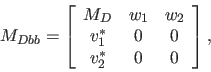
so that 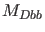 is nonsingular in the BPC cycle. Then we solve the systems
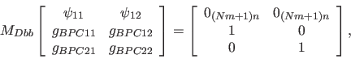
where
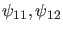 have 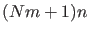 components,
and 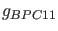, 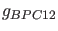, 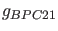, and 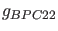,
are scalar test functions for the BPC. In the BPC cycle they all vanish.
The singularity matrix is
The first row corresponds to the BPC. It contains  zeros which indicates that , , , and should vanish.
The last row corresponds to the NS. Because we have to exclude that all four testfunctions of the BPC are zeros, we introduce an extra testfunction which corresponds to the norm of these four testfunctions. A NS is detected if this norm is nonzero,the testfunction for the fold is nonzero and the testfunction for the NS is equal to zero.
zeros which indicates that , , , and should vanish.
The last row corresponds to the NS. Because we have to exclude that all four testfunctions of the BPC are zeros, we introduce an extra testfunction which corresponds to the norm of these four testfunctions. A NS is detected if this norm is nonzero,the testfunction for the fold is nonzero and the testfunction for the NS is equal to zero.
Subsections